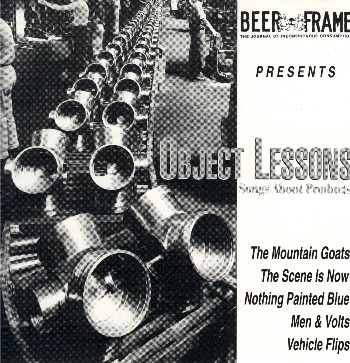

object lessons: songs about products

title: object lessions : songs about products
quote:On returning to my hometown of Claremont, California, on the
occasion of a friend's wedding in July of 1997, i was greatly saddened
to learn that the Bang Luck Market had closed. Since the early '80s
the Bang Luck had been the only Asian market east of the San Gabriel
Valley that could lay true claim to the title "Supermarket." They had
it all at the Bang Luck: Filipino canned goods, Korean ramen, Thai
medicinals, Vietnamese pickled jackfruit, Japanese candies, and Golden
Boy Peanuts, which were remarkable for their packaging, for their
country of origin, and for the inclusion of "salt" in the listed
ingredients. I ate hundreds of them on numerous and diverse occasions,
and I can assure you that no jury in the world would convict them of
having been salted.
format: cd
the mountain goats - golden boy
the scene is now - grenadine
nothing painted blue - miracle thaw
men & volts - charlie brannock's device
vehicle flips - honeywell round thermostat
please mail any questions/comments/complaints, or just notes hello to:nall@themountaingoats.net